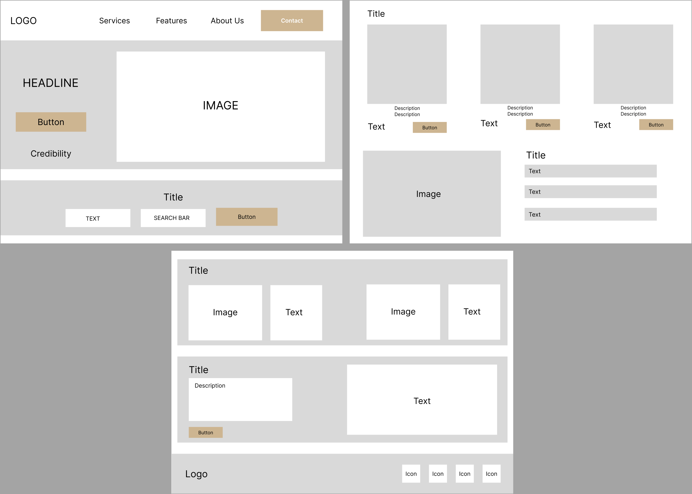

Helping you find you're dream home
Developer
Solo Project
HTML
JS
SASS

Pinnacle is a ficticious real estate company specializing in luxury properties.
The goal of this project was to create a simple responsive landing page for a fictious company closely following the wireframes provided.
Prior to creating the project, I created wireframes to visualize the layout of the landing page.
The search bar was one of the key features of a landing page that was consistent across real estate pages therefore I wanted it to be one of the first things that a user saw when they land on the page.
Lastly, I wanted to communicate the value of the websites service in the clearest way possible, eliminating anything that would distract the user.

I started the coding process by creating a search feature searching for properties specific to a city.
This feature was accomplished using JS. I used a conditional statement that would show properties depending on the selected city.
The user would then see properties according to their input and see information such as the price, and amenitites.
This section was created using JS. I created this by creating a conditional statement that would open and close the sections depending on what the user clicks.
Initially, I was planning on using jQuery to accomplish this feature, however, I wanted more flexibility and customization of the tabs. Sticking to the wireframes as close as I could.
Given there was more time, I would look to further expand on the search feature. I would add more filtering options such as by price , by the # of beds or type whether that be a house or a luxury apartment.